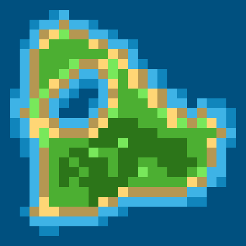
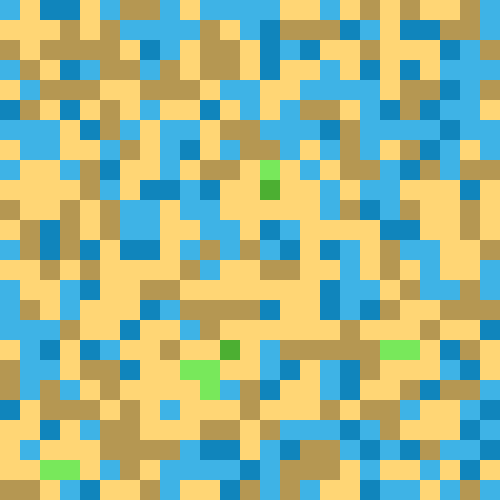

My Bachelor’s Thesis
In this project, I developed a modular toolkit for the procedural generation of 2D tile-based maps and conducted a scientific comparison of three discrete generation methods:
The backend was implemented in Go, with an interactive browser frontend in JavaScript. The system includes real-time analysis of key metrics such as entropy, clustering, autocorrelation, and frequency distribution.

To ensure comparability, all algorithms operate on standardized input (25×25 grids, 8 terrain types, fixed
seeds). Seven quantitative metrics were used to evaluate visual diversity, coherence, and structural complexity.
Key findings:
Each method excels in different areas: MLCA offers high controllability, Perlin produces natural transitions,
and WFC yields diverse results—but with higher computational cost. Hybrid combinations show strong potential.
Contribution:
A reproducible framework for evaluating and comparing procedural generators—complete with visual output,
interactive tooling, and scientific documentation.